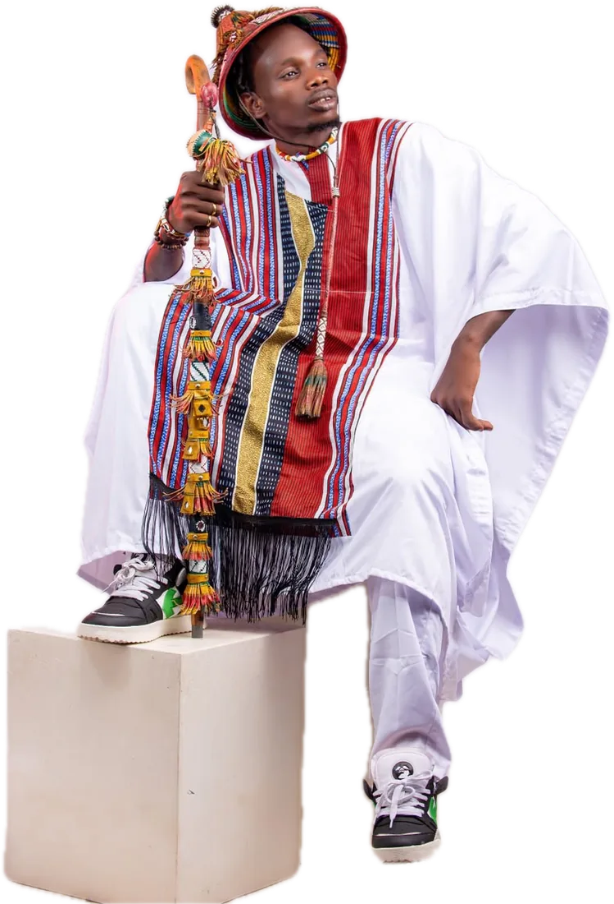
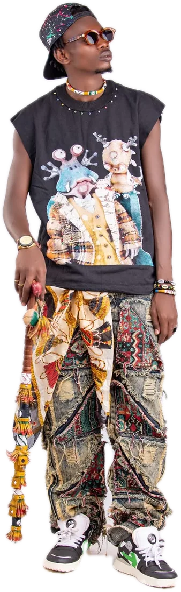
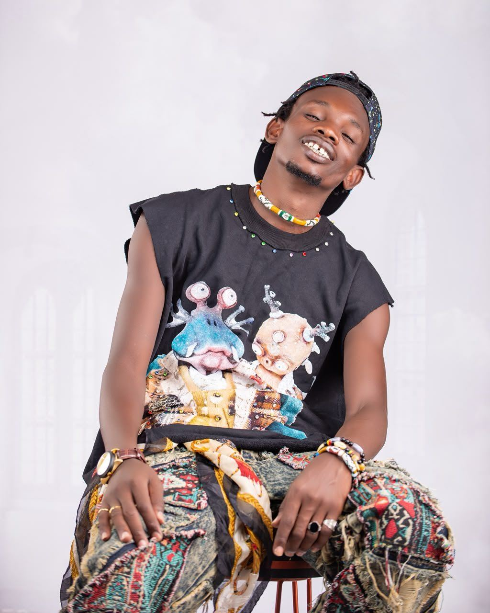
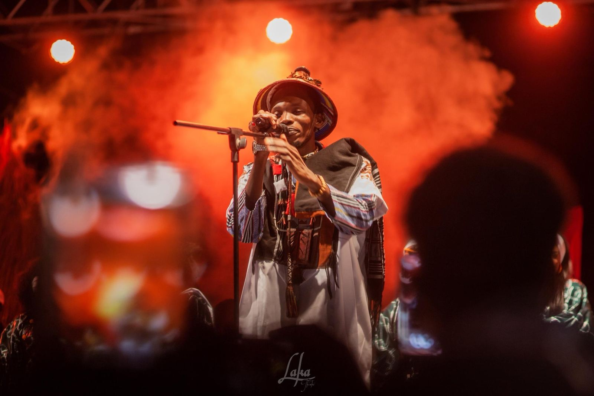

Rap peul · Sénégal — Mauritanie
BBMC
Ibrahima Sy
La voix du Fouta, du fleuve au monde.
Défiler

Depuis 201016 ans de rap peul
Ambassadeur du rap peul
Seize ans de rap.
Lire la biographie
Seize ans de rap.
La voix du pulaar.
Originaire de Thiemping, village riverain du fleuve Sénégal, BB MC s'impose comme l'une des figures majeures du rap peul. Son écriture, à la croisée du conte peul et du rap urbain, puise dans la tradition pour parler du présent.
Après le succès de son premier album Tinndi Tiiɗɗi, il franchit en 2026 un nouveau cap avec un premier concert accompagné d'un orchestre live à Dakar.
10,6 MVues YouTube
135Concerts SN & MR
1 M+Vues « Debbo Lamdo »
21Titres · Tinndi Tiiɗɗi
Nouveautés 2026
Tous les clips Derniers clips



Événement 2026
Show 4 Dakar
Show 4 Dakar
en live band
Maison de la Culture Douta Seck · Dakar · 18 avril 2026
Pour la première fois, BB MC monte sur scène accompagné d'un orchestre de musiciens en live : guitares, batterie, claviers, choriste et DJ. Une scénographie aux couleurs du Fouta, des artistes invités et une salle en fusion.
615Billets vendus
1erConcert avec orchestre
LiveMusiciens & choriste
45 KVues de la captation

Album studio · Août 2025
0:00 / 0:00
Tinndi Tiiɗɗi
21 titres qui marquent l'aboutissement de quinze ans de travail, entre tradition peule et modernité hip-hop. Écoutez-le ici, en intégralité.
—
BB MC · Tinndi Tiiɗɗi
- 01Tinndi Tiiɗɗi
- 02Gilli Cukalel
- 03Concept
- 04Fuuta feat. Gawlo Africa
- 05Talent
- 06Debbo Laamɗo feat. Mussu
- 07Yah Wiɓɓe
- 08Yaɓɓu ɗoo
- 09Miin Waawi
- 10Anndu Hooremaa feat. Agnés Dji
- 11So Hoddiraama
- 12Parani
- 13Wow-Wow
- 14Jombaajo feat. Salif Tassor
- 15Jarabi
- 16O Yiɗaama
- 17Fête Ta Vie
- 18Commandants feat. Safaray & Wizaby
- 19Yeeweende
- 20Politique
- 21Neene (Bonus)
Tournée 2026
135 concerts
135 concerts
et la route continue
Des villages du fleuve aux scènes de Dakar, BB MC sillonne chaque année le Sénégal et la Mauritanie, porté par un public fidèle qui chante ses textes en pulaar.
Toutes les dates- 30 maiNgourdianTournée Tabaski
- 31 maiTeteguelTournée Tabaski
- 02 juinSabarTournée Tabaski
- 12 aoûtWouro Mi2026
- 14 aoûtDiamouguel2026
- 10 sept.Garly2026
- 03 oct.Gourel Famoly2026
Galerie
Toute la galerie Shooting 2026


Vu et entendu sur
RFI2STVDStvOne Nation TVRTFSénégal FMVibe Radio
Concerts · Festivals · ÉvénementsFaites venir